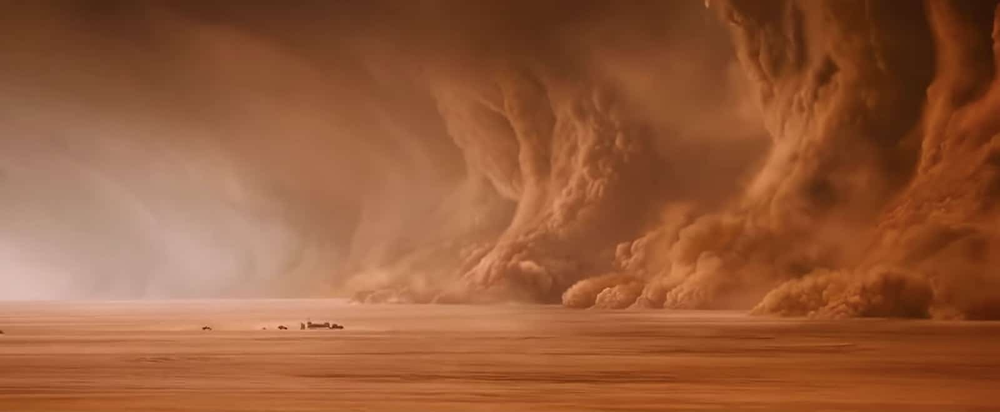
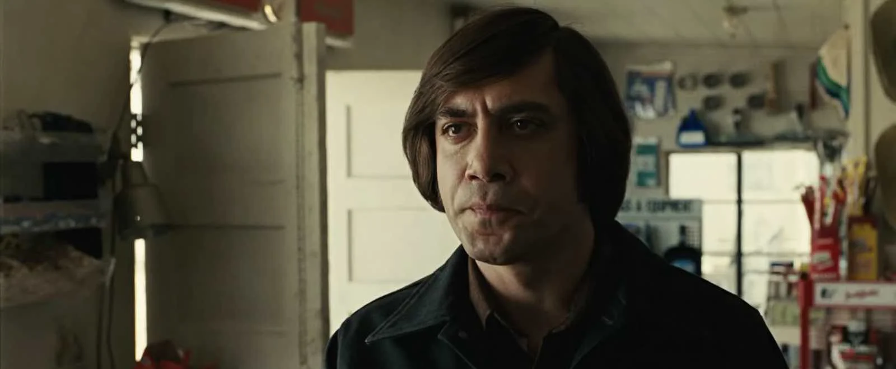
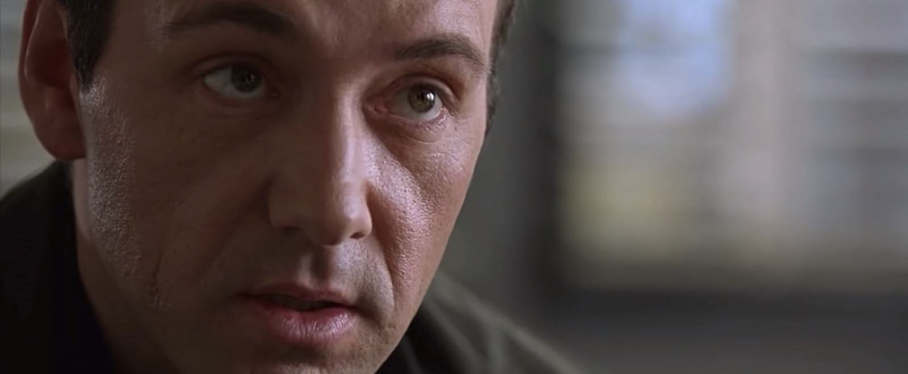
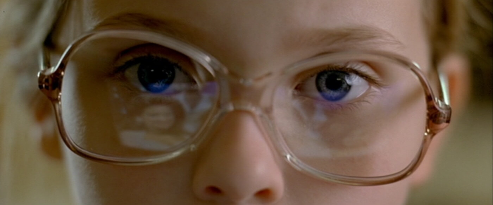

01 · 숏 사이즈 · 반드시 암기
큰 화면에서 작은 화면으로 — 여덟 단계






숏이 클수록 많은 정보, 작을수록 한 가지에 집중 — 정보량과 반비례
01 · 숏 사이즈 · 2 / 8
LS — 롱숏 / 와이드숏 Long Shot
〈마션〉LS
인물 전체와 배경이 균형 있게 — 인물과 주변 환경의 관계, 상황의 맥락
01 · 숏 사이즈 · 3 / 8
FS — 풀숏 Full Shot
〈장고: 분노의 추적자〉FS
머리끝부터 발끝까지 전신이 꽉 차게 — 행동 · 몸짓 · 동작 전체를 전달
01 · 숏 사이즈 · 4 / 8
KS — 니숏 Knee Shot
〈유주얼 서스펙트〉KS
무릎 위부터 — 인물 사이의 관계와 심리, 여럿이 나누는 대화 장면에
01 · 숏 사이즈 · 5 / 8
WS — 웨이스트숏 Waist Shot
〈원더 우먼〉WS
허리 위부터 — 대화 중심 장면에 가장 많이, 손짓 · 제스처까지 함께
01 · 확인 퀴즈
이 숏의 이름은?